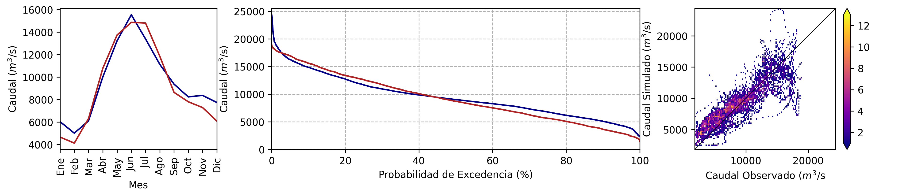
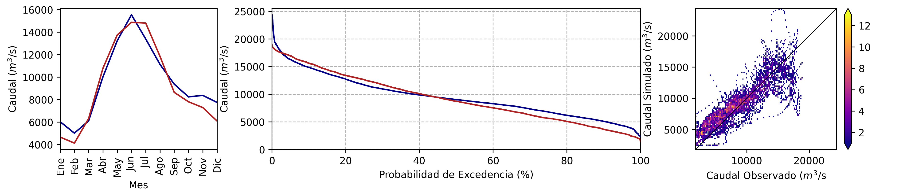
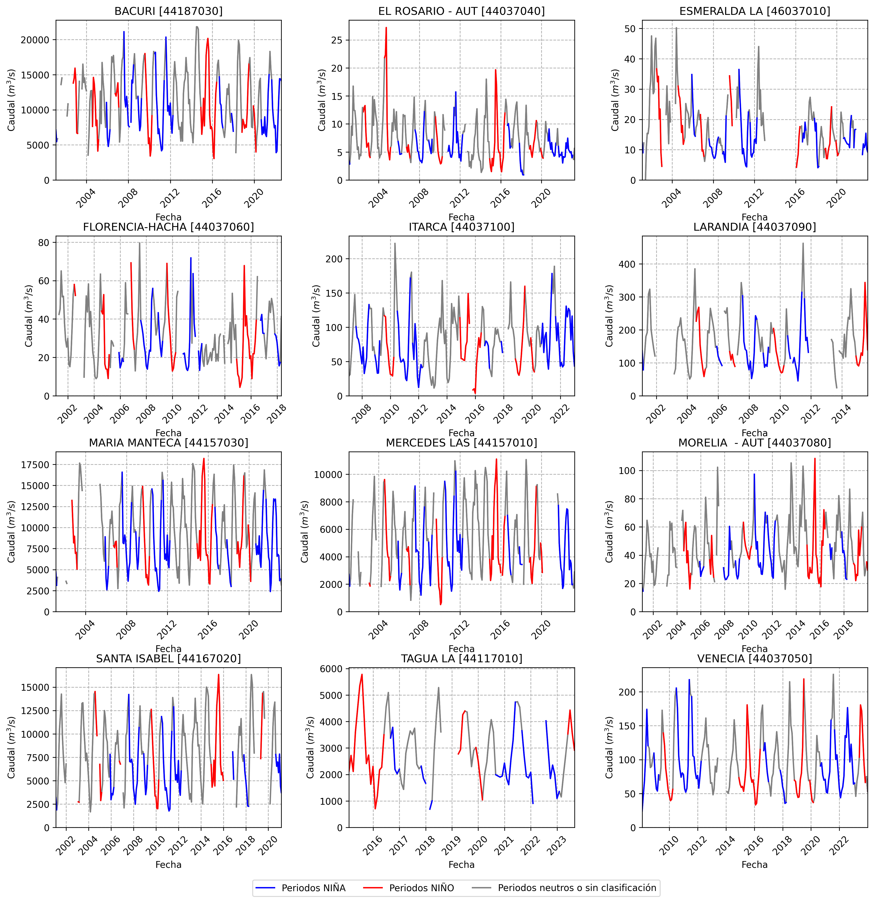
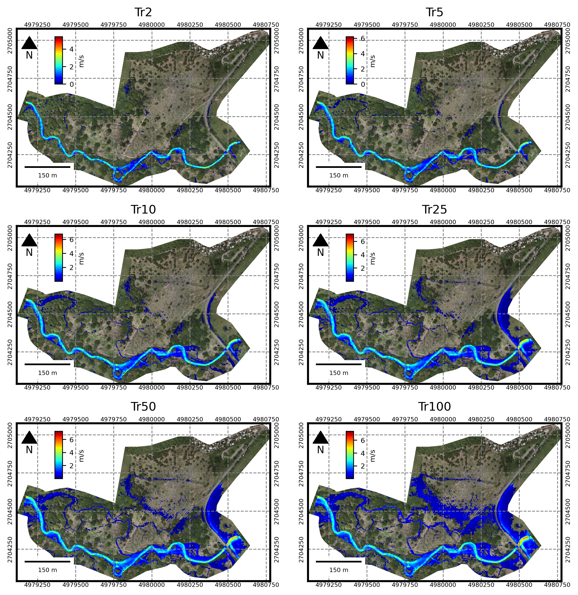
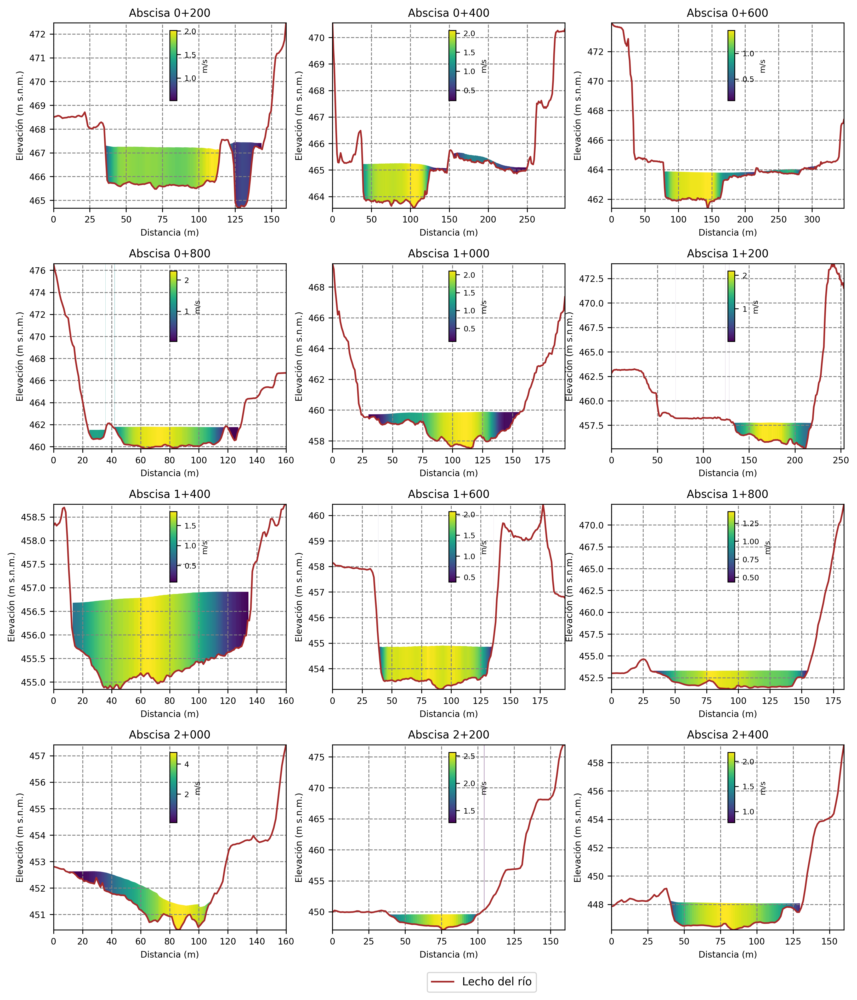

PORTAFOLIO
La hidrología y la hidráulica son pilares esenciales en la ingeniería moderna, desempeñando un rol crucial en la planificación, diseño y gestión de recursos hídricos. Estas disciplinas permiten no solo la creación de infraestructuras seguras y eficientes, sino también la promoción de la sostenibilidad y la resiliencia frente a eventos climáticos extremos. Su aplicación abarca diversas ramas de la ingeniería, incluyendo minería, generación energética e infraestructura.
Mi perfil está enfocado en la innovación y el desarrollo tecnológico, con una amplia experiencia en consultoría para proyectos hidráulicos e hidrológicos a nivel global. He trabajado exitosamente en sectores clave como el minero energético, el saneamiento básico y la infraestructura vial, ofreciendo soluciones efectivas y sostenibles. Además, he participado en la construcción de obras hidrosanitarias, contribuyendo al desarrollo integral de comunidades y al cuidado del medio ambiente.
Software y Herramientas/Lenguajes de Programación que domino:


Áreas Técnicas donde cuento con experiencia de valor para mis clientes:
Hidroclimatología
Análisis Hidroclimatológico comprender cómo el clima, a través de variables como la precipitación, temperatura, humedad, viento y radiación solar, influye en los procesos hidrológicos como la evapotranspiración, la escorrentía, la infiltración y el almacenamiento de agua en cuerpos de agua y acuíferos.
Mis servicios en hidroclimatología ayudan a prever y gestionar los impactos del clima en proyectos de infraestructura, energía y manejo de recursos hídricos. A través de modelización avanzada, optimizo la planificación de obras resilientes al cambio climático, gestiono riesgos de inundaciones, y mejoro la eficiencia en proyectos hidroeléctricos, solares y agrícolas. Mis estudios permiten a los clientes adaptarse a variaciones climáticas y tomar decisiones informadas para garantizar la sostenibilidad y seguridad de sus inversiones en sectores como la construcción, la energía renovable y la gestión del agua.
A continuación, presento el análisis que realicé sobre los datos de velocidad del viento y precipitación total durante el paso de la tormenta tropical Julia en octubre de 2023 sobre el mar Caribe. Este tipo de análisis es fundamental para evaluar condiciones hidroclimatológicas extremas, esenciales en el desarrollo de infraestructura para proyectos de ingeniería. El análisis se basó en los datos del reanálisis ERA5, proporcionados por el Centro Europeo de Previsiones Meteorológicas a Plazo Medio.


Hidráulica Marítima
La hidráulica marítima es un campo clave en la ingeniería, que aborda los desafíos asociados a la dinámica de los cuerpos de agua en zonas costeras y marítimas. Fenómenos como la erosión costera, la sedimentación, las marejadas ciclónicas y el impacto de las corrientes y olas en infraestructuras son algunos de los retos más críticos que deben gestionarse para garantizar la estabilidad y sostenibilidad de proyectos en estas zonas.
En este contexto, mi experiencia incluye el desarrollo de modelos de oleaje unidimensionales y bidimensionales, los cuales permiten analizar de manera precisa el comportamiento del oleaje, las corrientes y los niveles de agua, evaluando sus efectos en infraestructuras como puertos, diques y plataformas. He aplicado estos modelos en proyectos concretos, como en un sector costero de Cartagena, Colombia, donde incluyo figuras de referencia para ilustrar los resultados de estos análisis.


Estudios de este tipo son esenciales para diseñar soluciones que mitiguen los impactos de los fenómenos marítimos, optimizando la seguridad y eficiencia de las obras. Además, proporcionan una base técnica sólida para la gestión de zonas costeras y la toma de decisiones estratégicas en sectores como el transporte marítimo, la energía y el desarrollo urbano costero. Con ello, aseguro que los proyectos de mis clientes estén preparados para enfrentar los desafíos del entorno marítimo, garantizando su éxito y sostenibilidad.
Modelización Hidrológica
La modelización hidrológica es fundamental para la ingeniería y la gestión de recursos hídricos, ya que permite analizar y predecir el comportamiento del ciclo del agua en cuencas hidrográficas. Utilizando modelos avanzados como GR4J, MIKE11, SHIA, o HEC-HMS, es posible simular la relación entre la precipitación, la escorrentía y otros procesos hidrológicos clave. Estos modelos se nutren de datos climáticos e hidrológicos, incluyendo tanto observaciones de estaciones meteorológicas como datos satelitales, para generar simulaciones precisas que guían la toma de decisiones en proyectos hídricos.
Mi experiencia en este campo incluye la aplicación de modelos hidrológicos para evaluar la disponibilidad hídrica en regiones con climas diversos, estimar los caudales en regímenes extrémales (máximos y mínimos) y evaluar condiciones de diseño para diferentes tipos de infraestructura. La figura ilustra una modelación hidrológica agregada a escala temporal diaria de la cuenca del río Caquetá en uno de sus tramos, permitiendo estimar el régimen medio de caudales. Este análisis fue fundamental para evaluar la disponibilidad hídrica en un proyecto para uno de mis clientes, proporcionando datos cruciales para una gestión adecuada de los recursos.
 

La modelización hidrológica es esencial en una amplia gama de proyectos que requieren una comprensión detallada del comportamiento del agua en cuencas hidrográficas. Es particularmente útil en la planificación y diseño de infraestructuras hídricas, como presas, embalses y sistemas de riego, donde se necesita evaluar la disponibilidad de agua y prever posibles inundaciones. También juega un papel clave en la gestión de recursos hídricos urbanos y rurales, ayudando a diseñar sistemas de drenaje eficaces y a planificar el uso sostenible del agua. Además, la modelización hidrológica es crucial para la evaluación de riesgos en proyectos de construcción en áreas propensas a inundaciones, así como para la adaptación de infraestructuras a cambios climáticos y eventos extremos. Con su capacidad para generar simulaciones precisas y predecir el comportamiento del agua, la modelización hidrológica proporciona a los clientes información valiosa para tomar decisiones informadas y desarrollar proyectos resilientes y sostenibles.
Modelización Hidráulica
La modelización hidráulica emplea avanzadas herramientas computacionales para simular y analizar el comportamiento del flujo de agua en sistemas fluviales y estructuras hidráulicas. Modelos como HEC-RAS, IBER y SMS permiten representar detalladamente procesos como la propagación de avenidas, la interacción entre flujo y estructuras, y el transporte de sedimentos. Estos modelos se nutren de datos topográficos, hidrológicos y meteorológicos, permitiendo realizar simulaciones que son esenciales para el diseño de infraestructuras, la gestión de riesgos de inundación y la planificación de proyectos de ingeniería hidráulica. En mi experiencia, he utilizado estos modelos para evaluar la estabilidad de riberas, optimizar la gestión de embalses y diseñar soluciones sostenibles para el control de inundaciones.
En el campo de la modelización hidráulica, tengo amplia experiencia especializada en la evaluación y diseño de estructuras hidráulicas asociadas a diversas infraestructuras, incluyendo proyectos viales, mineros e industriales. Mi enfoque incluye una sólida experiencia en el área fluvial, abarcando la modelación de estructuras de protección marginal, el análisis del transporte de sedimentos y la evaluación de riesgos de inundación. Estos análisis son fundamentales para garantizar la estabilidad y funcionalidad de las infraestructuras en entornos complejos y dinámicos. Utilizo herramientas avanzadas para simular y prever el comportamiento del agua, permitiendo a los clientes optimizar el diseño de defensas fluviales, gestionar el impacto de sedimentos y desarrollar estrategias efectivas para mitigar riesgos de inundación.

He desarrollado mapas de inundación a partir de modelos hidráulicos como HEC-RAS, IBER y SMS, integrando datos topográficos y resultados de simulaciones para identificar zonas de riesgo. Estos mapas han sido esenciales en la planificación de infraestructuras, como la ubicación óptima de defensas fluviales, la identificación de rutas seguras en proyectos de transporte, y la zonificación urbana para minimizar riesgos de inundación, contribuyendo a un desarrollo seguro y sostenible.
Mis servicios en modelación hidráulica son esenciales para clientes que necesitan evaluar el comportamiento del agua en diversos contextos. Esto incluye el desarrollo de diseños para infraestructuras viales, la creación de sistemas de gestión de aguas pluviales y control de sedimentos para proyectos mineros e industriales, así como el diseño de estructuras de protección fluvial para prevenir la erosión y la evaluación y mitigación de riesgos de inundación. Estos servicios son cruciales en sectores como la minería, el transporte fluvial, la construcción y el desarrollo urbano.

Un modelo hidráulico bidimensional permite extraer información detallada sobre la velocidad del flujo y otras variables hidráulicas en todo el dominio del modelo. Esto proporciona una visión precisa del comportamiento del agua en diferentes escenarios, lo que es crucial para la planificación, diseño y gestión de infraestructuras hidráulicas, así como para la evaluación de riesgos asociados a inundaciones y otros fenómenos fluviales.
Las herramientas GIS complementan de manera crucial la modelación hidráulica, permitiendo integrar datos espaciales y visualizar el comportamiento del flujo en diversos escenarios. Facilitan el análisis de la topografía y la identificación de áreas vulnerables, mejorando la precisión en la planificación y gestión de recursos hídricos. A continuación, se observa el uso de una herramienta GIS para visualizar el nivel freático.

Ingeniería de Sistemas Hídricos
La ingeniería de sistemas hídricos se enfoca en el diseño y gestión de estructuras para el manejo de aguas superficiales y la infraestructura asociada al saneamiento. Este campo abarca la creación de soluciones eficientes para el control y tratamiento de aguas pluviales, la gestión de escorrentías y la mejora de sistemas de saneamiento para garantizar un manejo sostenible y efectivo del agua en diversas aplicaciones.
Mis servicios en ingeniería de sistemas hídricos incluyen el diseño de infraestructuras para el manejo de aguas superficiales, tales como drenajes urbanos y rurales, sistemas de retención y control de escorrentías, y estructuras de captación y distribución de agua. Además, desarrollo soluciones para la infraestructura de saneamiento, asegurando la correcta gestión de aguas residuales y la protección de recursos hídricos.

El manejo de aguas superficiales en entornos industriales, rurales y urbanos se apoya en infraestructuras como canales, piscinas de sedimentación y estructuras de almacenamiento, que controlan el flujo y tratan el agua. Estos sistemas previenen inundaciones y optimizan la gestión eficiente y sostenible del recurso.

Cambio Climático
El cambio climático es uno de los desafíos más significativos de nuestro tiempo, afectando de manera crítica los recursos hídricos a nivel global. Los cambios en los patrones de precipitación, el aumento de la frecuencia y severidad de fenómenos extremos como sequías e inundaciones, y la alteración en la disponibilidad de agua dulce son algunas de las consecuencias más notables.
En este contexto, mi experiencia se centra en la evaluación de proyecciones de cambio climático, basadas en el sexto informe del IPCC. Utilizo los resultados de los modelos climáticos globales considerados en el CMIP6 (Coupled Model Intercomparison Project Phase 6) para analizar el impacto del cambio climático en los recursos hídricos.
Estos análisis son fundamentales para la planificación de proyectos de infraestructura, ya que permiten anticipar riesgos climáticos y diseñar soluciones más resilientes. Además, aportan una base científica sólida para la gestión sostenible de los recursos hídricos, la adaptación de las infraestructuras a futuros escenarios climáticos, y la toma de decisiones estratégicas en sectores como la energía, la agricultura, y el desarrollo urbano. Esto garantiza que los proyectos de mis clientes estén preparados para enfrentar los desafíos del cambio climático, asegurando su sostenibilidad y éxito a largo plazo.